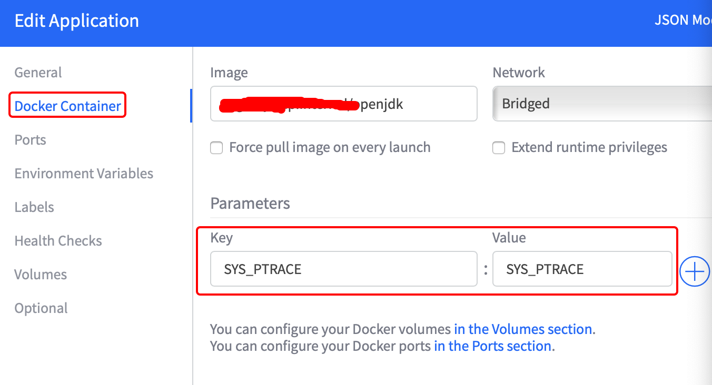

jmap Error in an OpenJDK Docker Container
After docker starts openjdk, you can view the process
# docker exec - it XXX jps
10 XXX.jar
It can be seen that the started java process ID is always 10, and then the JVM command can be executed, such as
# docker exec - it XXX jstack 10
# docker exec - it XXX jstat - gcutil 10
# docker exec - it XXX jmap - histo 10
However, an error will be reported when executing jmap - heap or -dump:
Attaching to process ID 10, please wait... Error attaching to process: sun.jvm.hotspot.debugger.DebuggerException: Can't attach to the process: ptrace(PTRACE_ATTACH, ..) failed for 10: Operation not permitted sun.jvm.hotspot.debugger.DebuggerException: sun.jvm.hotspot.debugger.DebuggerException: Can't attach to the process: ptrace(PTRACE_ATTACH, ..) failed for 10: Operation not permitted at sun.jvm.hotspot.debugger.linux.LinuxDebuggerLocal$LinuxDebuggerLocalWorkerThread.execute(LinuxDebuggerLocal.java:163) at sun.jvm.hotspot.debugger.linux.LinuxDebuggerLocal.attach(LinuxDebuggerLocal.java:278) at sun.jvm.hotspot.HotSpotAgent.attachDebugger(HotSpotAgent.java:671) at sun.jvm.hotspot.HotSpotAgent.setupDebuggerLinux(HotSpotAgent.java:611) at sun.jvm.hotspot.HotSpotAgent.setupDebugger(HotSpotAgent.java:337) at sun.jvm.hotspot.HotSpotAgent.go(HotSpotAgent.java:304) at sun.jvm.hotspot.HotSpotAgent.attach(HotSpotAgent.java:140) at sun.jvm.hotspot.tools.Tool.start(Tool.java:185) at sun.jvm.hotspot.tools.Tool.execute(Tool.java:118) at sun.jvm.hotspot.tools.HeapSummary.main(HeapSummary.java:49) at sun.reflect.NativeMethodAccessorImpl.invoke0(Native Method) at sun.reflect.NativeMethodAccessorImpl.invoke(NativeMethodAccessorImpl.java:62) at sun.reflect.DelegatingMethodAccessorImpl.invoke(DelegatingMethodAccessorImpl.java:43) at java.lang.reflect.Method.invoke(Method.java:498) at sun.tools.jmap.JMap.runTool(JMap.java:201) at sun.tools.jmap.JMap.main(JMap.java:130) Caused by: sun.jvm.hotspot.debugger.DebuggerException: Can't attach to the process: ptrace(PTRACE_ATTACH, ..) failed for 10: Operation not permitted at sun.jvm.hotspot.debugger.linux.LinuxDebuggerLocal.attach0(Native Method) at sun.jvm.hotspot.debugger.linux.LinuxDebuggerLocal.access$100(LinuxDebuggerLocal.java:62) at sun.jvm.hotspot.debugger.linux.LinuxDebuggerLocal$1AttachTask.doit(LinuxDebuggerLocal.java:269) at sun.jvm.hotspot.debugger.linux.LinuxDebuggerLocal$LinuxDebuggerLocalWorkerThread.run(LinuxDebuggerLocal.java:138)
This is because docker disables ptrace,
1) If you start manually through the docker command, add parameters
# docker run --cap-add SYS_PTRACE ...
2) If started through marathon

Then the problem is fixed